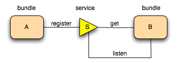

The OSGi technology is a set of specifications that define a dynamic component system for Java. These specifications enable a development model where an application is composed of several components which are packaged in bundles. Components are communicating through nano-services.
An application in this context represents the functionality desired by the organization. For example, an expense account reporting application or a payroll application. The goal is to make the application code as small as possible because that code is not reusable. It is the code that is unique for the application and usually highly coupled to a large set of components. That, however, works two ways. Since applications are not reusable extra dependencies are very cheap.
Components are the reusable building blocks, a.k.a. the bricks, the components provide the implementation code. Since components should be reusable, they should watch their dependencies because any dependency will be added to any application that uses this component.
The OSGi specifications enable components to hide their implementations from other components while communicating through nano-services, which are objects that are explicitly shared between components.
Nano-services are the innovation that OSGi brought to the table. Nano services are the reified links between components. In a well designed OSGi system, all links between components go through a nano-service. Nano services have an API that is defined in a Java package. The API consists of a classes and/or interfaces that are needed for the collaboration between the provider of the service and the consumer of the service. (Provider and consumer does not imply implementer/user of an interface, that is why different words are used.)
This surprisingly simple model has far reaching effects for almost any aspect of the software development process.
A Bundle is the OSGi name for a module, it packages the components with their resources. Bundles are explicitly in their requirements on the environment and the capabilities they will provide to the environment. For example, a Bundle will express what Java packages it needs in what version.
Though components have been on the horizon for a long time, so far they failed to make good on their promises. OSGi is the first technology that actually succeeded with a component system that is solving many real problems in software development. Adopters of OSGi technology see significantly reduced complexity in almost all aspects of development. Code is easier to write and test, reuse is increased, build systems become significantly simpler, deployment is more manageable, bugs are detected early, and the runtime provides an enormous insight into what is running. Most important, it works as is testified by the wide adoption and use in popular applications like Eclipse, Adobe Experience Manager, Liferay, and a myriad of IBM applications.
The OSGi technology was developed to create a collaborative software environment. We were not looking for the possibility to run multiple applications in a single VM. Application servers do that already (though they were not yet around when we started in 1998). No, our problem was harder. We wanted an application to emerge from putting together different reusable components that had no a-priori knowledge of each other. Even harder, we wanted that application to emerge from dynamically assembling a set of components.
For example, you have a home server that is capable of managing your lights and appliances. A component could allow you to turn on and off the light over a web page. Another component could allow you to control the appliances via a mobile text message. The goal was to allow these other functions to be added without requiring that the developers had intricate knowledge of each other and let these components be added independently.
OSGi enRoute shows that these goals are met.
The OSGi has a layered model that is depicted in the following figure.
The following list contains a short definition of the terms:
These concepts are more extensively explained in the following sections.
The fundamental concept that enables such a system is modularity. Modularity, simplistically said, is about assuming less. Modularity is about keeping things local and not sharing. It is hard to be wrong about things you have no knowledge of and make no assumptions about them. Therefore, modularity is at the core of the OSGi specifications and embodied in the bundle concept. In Java terms, a bundle is a plain old JAR file. However, where in standard Java everything in a JAR is completely visible to all other JARs, OSGi hides everything in that JAR unless explicitly exported. A bundle that wants to use another JAR must explicitly import the parts it needs. By default, there is no sharing.
Though the code hiding and explicit sharing provides many benefits (for example, allowing multiple versions of the same library being used in a single VM), the code sharing was only there to support OSGi services model. The services model is about bundles that collaborate. the service model is about turning the giant trees into tooth picks.
The reason we needed the service model is because Java shows how hard it is to write collaborative with only class sharing. The standard solution in Java is to use factories that use dynamic class loading and statics. For example, if you want a DocumentBuilderFactory, you call the static factory method DocumentBuilderFactory.newInstance(). Behind that façade, the newInstance methods tries every class loader trick in the book (and some that aren’t) to create an instance of an implementation subclass of the DocumentBuilderFactory class. Trying to influence what implementation is used is non-trivial (services loader model, properties, conventions in class name), and usually global for the VM. Also it is a passive model. The implementation code can not do anything to advertise its availability, nor can the user list the possible implementations and pick the most suitable implementation. It is also not dynamic. Once an implementation hands out an instance, it can not withdraw that object, ever. Worst of all, the factory mechanism is a convention used in hundreds of places in the VM where each factory has its own unique API and configuration mechanisms. There is no centralized overview of the implementations to which your code is bound. In other words, a nightmare.
The solution to all these issues is simply the OSGi service registry. A bundle can create an object and register it with the OSGi service registry under one or more interfaces. Other bundles can go to the registry and list all objects that are registered under a specific interfaces or class. For example, a bundle provides an implementation of the DocumentBuilder. When it gets started, it creates an instance of its DocumentBuilderFactoryImpl class and registers it with the registry under the DocumentBuilderFactory class. A bundle that needs a DocumentBuilderFactory can go to the registry and ask for all available services with the DocumentBuilderFactory class. Even better, a bundle can wait for a specific service to appear and then get a call back.
A bundle can therefore register a service, it can get a service, and it can listen for a service to appear or disappear. Any number of bundles can register the same service type, and any number of bundles can get the same service. This is depicted in the following figure.

This in general called a broker pattern.
What happens when multiple bundles register objects under the same interface or class? How can these be distinguished? First, in many cases it is not important to distinguish between individuals. Otherwise, the answer is properties. Each service registration has a set of standard and custom properties. A expressive filter language is available to select only the services in which you are interested. Properties can be used to find the proper service or can play other roles at the application level.
Services are dynamic. This means that a bundle can decide to withdraw its service from the registry while other bundles are still using this service. Bundles using such a service must then ensure that they no longer use the service object and drop any references. We know, this sounds like a significant complexity but it turns out that helper classes like the Service Tracker and frameworks like Declarative Services can remove the pain while the advantages are quite large. The service dynamics were added so we could install and uninstall bundles on the fly while the other bundles could adapt. That is, a bundle could still provide functionality even if the Http Service went away.
We found that the real world is actually dynamic and many problems are a lot easier to model with dynamic services than static factories. For example, a Device service could represent a device on the local network. If the device goes away, the service representing it is unregistered. This way, the availability of the service models the availability of a real world entity. This works out very well in, for example, the distributed OSGi model where a service can be withdrawn if the connection to the remote machine dies. It also turns out that the dynamics solve the initialization problem. OSGi applications do not require a specific start ordering in their bundles.
We found that the service registry significantly simplified application code because it handle so many common patterns.
The effect of the service registry has been that many specialized APIs can be much modeled with the service registry. Not only does this simplify the overall application, it also means that standard tools can be used to debug and see how the system is wired up.
Nano-services should be looked upon as a software design primitive. In the eighties objects were seen as weird curiosities as structs with function tables. Only when polymorphism, inheritance, and data hiding became design primitives in people’s mind did we start to reap the benefits. This is similar for nano-services. Nano-services are extremely light weight (not much more than a Java Object) but have semantics that go way beyond what a plain Object can do.
Though the service registry accepts any object as a service, the best way to achieve reuse is to register these objects under (standard) interfaces to decouple the implementer from the client code. This is the reason the OSGi Alliance publishes the Compendium specifications. These specification define a large number of standard services, from a Log Service to a Measurement and State specification. All these standardized services are described in great detail.
That said, the approach to decouple the API from the implementation pays off in even the smallest of problems. It is our experience that even trivial problems tend to grow over time. Separating the API from the implementation makes almost every aspect of the software development process simpler. It is our recommendation that inside companies the responsibilities of organization wide APIs are carefully managed.
Two of those standardized services in the OSGi are the Configuration Admin service and the Declarative Services. Though these service are just a few of the many compendium services they have a special role. These services provide functionality that is very hard to evaluate from the outside because they have no counterpart in in other systems. (A case could be made that they should probably have been part of the framework.)
Declarative Services makes writing a service implementation as simple as writing a POJO with a few annotations. Though there are other systems that do similar injections as Declarative Services, these other systems ignore time and dependencies. By handling time and (dynamic) dependencies without any code overhead OSGi provides a toolbox that is as innovative as objects were in the nineties.
In a similar vein, Configuration Admin can be used to not only configure service implementations, it can also control the life cycle.
The pair of DS and Configuration Admin make it possible to create components that are completely configured through Configuration Admin (not requiring a confguration API), including their life cycle.
Again, this is a feature that has no counterpart in other environments but the value of this is hard to over estimate.
Bundles are deployed on an OSGi framework, the bundle runtime environment. This is not a container like Java Application Servers. It is a collaborative environment. Bundles run in the same VM and can actually share code. The framework uses the explicit imports and exports to wire up the bundles so they do not have to concern themselves with class loading. Another contrast with the application servers is that the management of the framework is standardized. A simple API allows bundles to install, start, stop, and update other bundles, as well as enumerating the bundles and their service usage. This API has been used by many management agents to control OSGi frameworks. Management agents are as diverse as the Knopflerfish desktop and the Prosyst management system.
The OSGi specification process requires a reference implementation for each specification. However, since the first specifications there have always been commercial companies that have implemented the specifications as well as open source implementations. Currently, there are 4 open source implementations of the framework and too many to count implementations of the OSGi services. The open software industry has discovered OSGi technology and more and more projects deliver their artifacts as bundles.
OSGi enRoute is about helping you crossing the chasm between building typical Java (Enterprise) Systems (JES) and Service Oriented Systems (SOS). This is a paradigm shift because either side is seriously puzzled about what on earth the other side is thinking. Since the JESsers are today in the majority, we’re going to assume you wonder what the heck SOS even is. So let’s start with providing some background.
Our industry went through several paradigm shifts already where the major shifts were to structured programming and later to object oriented programming. Both shifts included the previous best practices but provided another way of thinking about problems. Both shifts took an amazingly large time because software practitioners tend to dislike it when their baby’s are called ugly. Now in general we’re a pretty clever bunch in our industry, at least we’re convinced we are. However, a paradigm shift happens when you can understand a new mechanism but you do not feel it.
In the minds of OSGi practitioners, OSGi services are primitive. If we see a problem, services pop up anywhere from our brains because they capture a very complex multi-dimensional concept with a single chunk. So be aware, feeling services will require an effort, but be assured, once you feel them they are a wonderful design primitive. But let’s first try to make you understand the mechanism.
An OSGi service is an object that is offered to the service registry. A component that needs a specific service requests the service registry for one. It can specify the type, how many, and it can provide only services whose properties match a given filter. This is the broker pattern and it in OSGi is fully dynamic. Offers and requests can come at any time, but for many surprisingly, withdrawals and returning services can also happen at any time. This is usually the place where the first developers give up in disgust: too complex! However, it turns out that it is absolutely not. The OSGi Declarative Service standard is as easy to use as the best Dependency Injection (DI) framework (with annotations, so no XML required) but it can create components that live quite well in this dynamic world without any conscious effort.
However, even if though it is as easy as classic DI, why would we need these dynamics?
The reason is that we now have a new primitive design concept that allows us to model an enormous amount of real world problems. For example, Distributed OSGi registers a local service in a remote framework. Since the communication between the frameworks is in the real world, failures will happen which will make the remote service registration invalid. To handle this in JES you need highly specialized listeners and other special code that usually intricately ties you to an implementation. In distributed OSGi there is no such need. The user of the remoted service will be uninjected when the service can no longer be supported. The only dependency of the user is the API used by the remoted service.
There are many more such use cases. Experience shows that we can significantly simplify JES APIs because we do not have to concern ourselves with life cycle issues. Life cycle issues are embedded in the OSGi service concept, they do not require explicit API. Many timing and dependency problems translate very naturally to µservices. Since OSGi provides such a powerful DI framework that makes it trivial to work in such a dynamic environment we have just gotten rid of a tremendous amount of accidental complexity! We also got rid of those evil global variables that are sometimes called statics (OSGi is static free).
In practice, it is possible to design an API for JES and SOS where the SOS design is a fraction of the JES design. In turns out that providing implementations for these so much simpler service APIs is often quite easy because there are already existing implementations in open source that only need a small facade, or do them from scratch. Though the starting from scratch sounds scary, it turns out that since these implementations are OSGi components themselves they can leverage the built services like Configuration Admin, the web server, Event Admin, etc. that in most larger open source implementations are custom built.